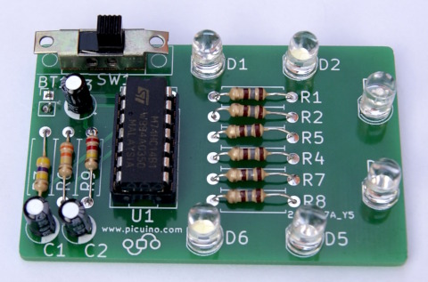
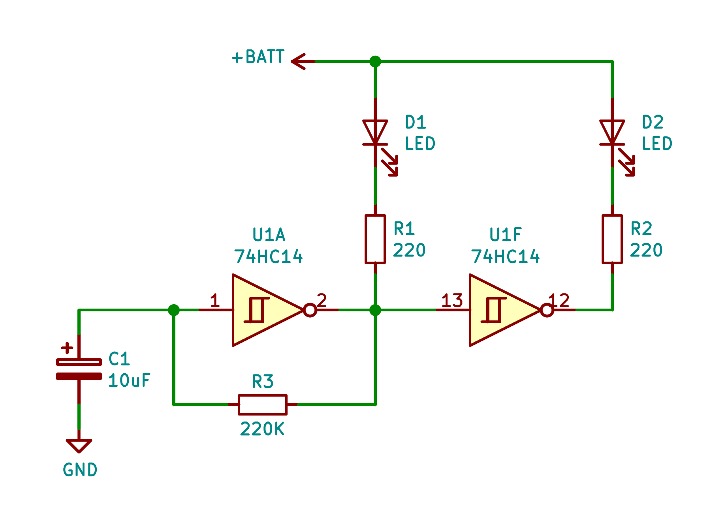
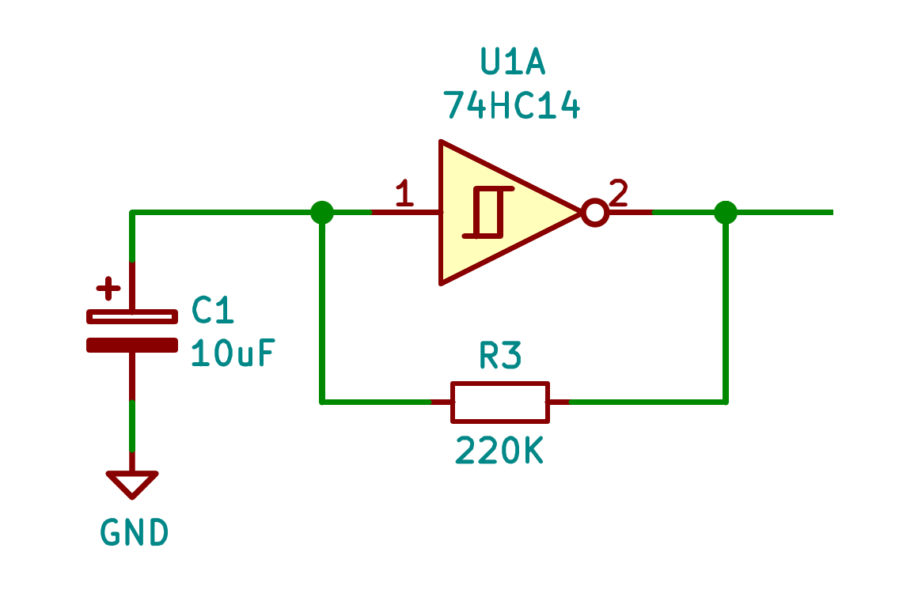
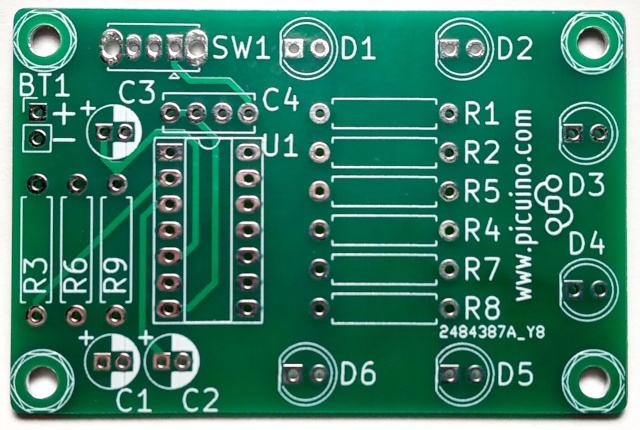
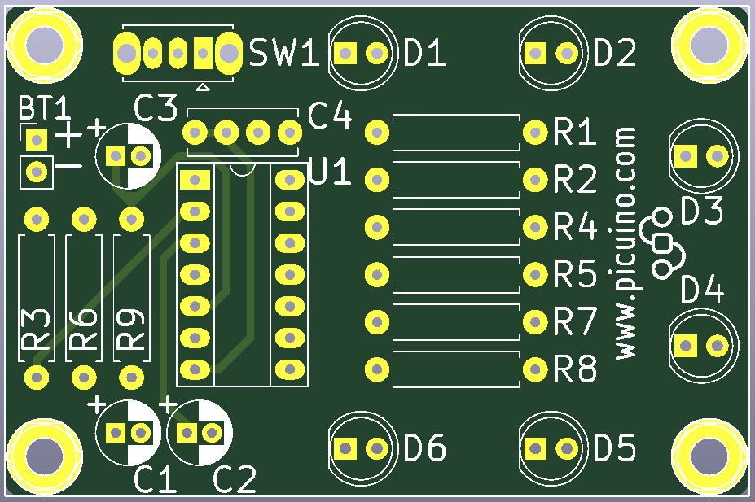
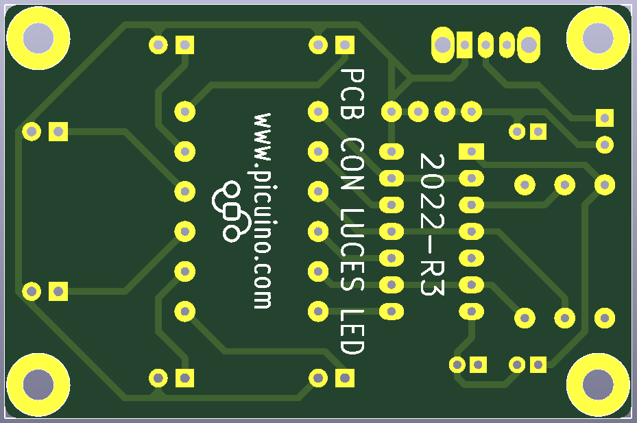
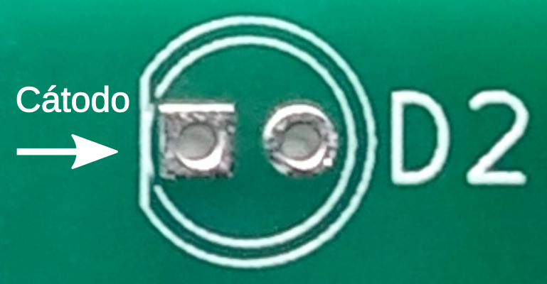
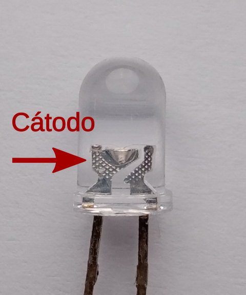

Circuit imprès amb llums LED¶
Disseny i muntatge d’un circuit imprès senzill amb 6 llums LED intermitents.
{kind=link}

: Descarregueu: `Placa de circuit imprès ja muntat. Format JPG. <Electronic/_Images/Electronic-PB-Luces-Led-03.jpg> `
Circuit elèctric complet¶
{kind=link}

: Descàrrega: Circuit elèctric del circuit amb llums LED. Format PDF. <Electronic/Electronic-PB-Luces-led.pdf>
Funcionament del circuit oscil·lador¶
El circuit amb llums que parpelleja es basa en un oscil·lador que canvia la seva sortida cada poc temps, encès i desactivat el LED.
{kind=link}

Aquest circuit oscil·lador està format per un inversor amb Trigger Schmitt, un condensador C1 i una resistència a la retroalimentació R3.
El circuit d’inversors amb disparador Schmitt canvia la seva sortida a diferents tensions d’entrada. Aquest comportament s’anomena histèresi d’entrada i és el que permet que el circuit funcioni com a oscil·lador. Al gràfic següent podem veure com canvia la tensió de sortida del inversor per a diferents tensions d’entrada. Aquesta figura rectangular amb dues línies horitzontals és el que té l’inversor i indica que treballa amb histèresi.
{kind=link}
Quan el circuit està activat per primera vegada, el condensador es descarrega i, per tant, la seva tensió al terminal positiu val zero volts. L’inversor de Schmitt té, per tant, zero volts (un zero lògic) i a la seva sortida els 5 volts d’alimentació positiva (lògica). En aquesta situació, la resistència a la retroalimentació R3 porta gradualment la tensió del condensador fins que arribi a 3,33 volts, la tensió de la qual l’inversor de Schmitt considera que l’entrada val la pena lògica i, per tant, canvia la seva sortida a zero volts (lògic zero).
Ara, la resistència a la retroalimentació de R3 està descarregant gradualment la tensió del condensador fins que arribi a 1,66 volts, la tensió de la qual l’inversor de Schmitt considera que l’entrada val la pena un zero lògic i, per tant, canvia la seva sortida a cinc volts (un lògic) retornant el cicle per repetir -se una i altra vegada.
La velocitat d’oscil·lació dependrà dels valors del condensador i de la resistència. Com més vells siguin, més llarg el circuit trigarà a abastar -se. La fórmula aproximada del temps d’oscil·lació és:
Temps d’oscil·lació = 0,8 · R3 · C1 = 0,8 · 220000 · 0.000010 = 1,76 segons
El LED D1 connectat a la sortida oscil·ladora mitjançant una resistència limitant R1, s’encendrà i s’apagarà a la mateixa velocitat que l’oscil·lador.
El LED D2 connectat a la sortida d’un altre inversor Schmitt mitjançant una resistència limitant R2, s’encendrà quan D1 s’apagui i s’apagarà quan D1 estigui activat, produint un parpelleig alternatiu.
Aquest comportament es repeteix en els tres oscil·ladors que el circuit complet té, a diferents freqüències des de R3, R6 i R9, tenen valors diferents i, per tant, diferents velocitats de matràs.
Circuit imprès (PCB)¶
{kind=link}

: Descàrrega: Disseny del circuit elèctric i del circuit imprès. Format KICAD. <Electronic/Electronic-PB-Luces-led.zip>
: Descarregueu: Gerber Files per a la fabricació del circuit imprès. Format postal. <Electronic/Electronic-PB-Luces-Led-Gerber.Zip>
Els fitxers Gerber serveixen per sol·licitar la fabricació de la placa de circuit imprès a una empresa de fabricació de plaques de circuit imprès com ara jlcpcb o pcbway <https://www.pcbway.com/> __.
En total, hi ha un conjunt de 7 fitxers Gerber diferents, tres fitxers per a la part frontal, 3 fitxers per a la capa posterior i un per a les vores de la placa. També hi ha un fitxer que indica on s’han de fer els exercicis (perfor).
Els fitxers Gerber i de perforació es distribueixen tal com s’indica a continuació:
- Pistes de coure de la capa frontal (f_cu)
- Pistes de coure de la capa posterior (B_CU)
- Màscara de soldadura de capa frontal (F_MASK)
- Màscara de soldadura de la capa posterior (b_mask)
- Impressió de components de la part frontal (f_silks)
- Fons dels components posteriors (b_silks)
- Vores per tallar la placa (edge_cuts)
- Arxius de perforació (.DRL)
{kind=link}

{kind=link}

- ** Pistes de coure: **
- Són els conductors que connecten tots els components de la placa de circuit imprès. Apareixen al dibuix groc (sense màscara de soldadura) o de color verd clar (ja cobert amb màscara de soldadura).
- ** Màscara de soldadura: **
- És una capa de pintura, generalment verda, tot i que pot tenir altres colors, que serveix per protegir les pistes de coure de la corrosió i per evitar els curtmetratges quan es realitzen el procés de soldadura. La màscara de soldadura no s'aplica a sobre de les pastilles de soldadura.
- ** Serigrafia de components **:
- És una capa de pintura, generalment blanca, que serveix per indicar el nom dels components del circuit i per escriure indicacions o dibuixos. Aquesta capa de pintura s’aplica amb la tècnica d’impressió de pantalla i, per tant, el seu nom.
Llista de components (BOM)¶
La llista de components (també anomenat BOM o Bill of Materials) és una llista on tots els components del circuit imprès apareixen amb la seva quantitat i referència per poder -los obtenir abans de fer el muntatge.
La llista de components també pot tenir la referència de compra d’un distribuïdor de components electrònics. Al document següent, s’han afegit les referències del TME distribuïdor.
: Descarregueu: Llista de components de la placa amb llums LED. Format PDF. <Electronic/PCB-Luces-Led/Bom/Electronic-PCB-Luces-Led-bom.pdf>
: Descarregueu: Llista de components de la placa amb llums LED. Format ODS. <Electronic/PCB-Luces-Led/Bom/Electronic-Pb-Luces-Led-Bom.ods>
Ordre de muntatge i posició¶
Quan la soldadura, els components han de seguir un ordre, de manera que els components més baixos es solden primer i els més alts. D’aquesta manera, al voltant de la placa del circuit imprès, els components poden confiar en la taula i no es desprenen de la placa.
A més, cada component té una posició de soldadura. Si no respectem aquesta posició, correm el risc de fer malbé el component o fer que el circuit funcioni.
L’ordre i la posició del muntatge són els següents:
** 1. Resistències **:
No necessiten cap ordre particular per funcionar correctament, però el codi de colors és més elegant i fàcil de llegir quan totes les bandes d'or estan alineades a la dreta (resistències horitzontals) o cap amunt (resistències verticals) com a la imatge de l'inici d'aquesta unitat.
** 2. Sw1 Switch Switch **:
Caldrà muntar -lo de manera que la palanca de commutador estigui situada fora del circuit imprès de manera que sigui senzill conduir l’interruptor.
** 3. Circuit integrat Zócalo **:
El Zocalo té una petita fitxa a la part superior que ha d’estar alineada amb la pestanya d’impressió de pantalla de components, també a la part superior del Zócalo.
Si inserim el circuit integrat de manera incorrecta (cap avall), correm el risc de fer -lo malbé quan circula el corrent.
** 4. CONDENTS **:
Els condensadors electrolítics tenen una banda blanca en un dels seus dos pins que indica el pol negatiu del component i que també s’ha de muntar a la zona blanca de la impressió del circuit imprès.
És molt important que els condensadors estiguin muntats correctament perquè si reben tensió al revés, s’esfondraran i també generaran gas dins que poden fer -los explotar.
** 5. Diodes LED **:
Els díodes només condueixen en un sentit i no funcionen en sentit contrari. A la pantalla d’impressió de la placa del circuit imprès, el negatiu o el càtode del LED sempre mira cap a l’esquerra. Es distingeix perquè el cercle té un chaflán i perquè el coixinet de soldadura és quadrat.

En distingir el càtode en díodes LED, la manera més fàcil és mirar cap a dins i buscar la zona metàl·lica més gran, on el LED es recolza i es connecta al passador negatiu (càtode).

{kind=link}
{kind=link}
** 6. Cables de bateria **:
És molt important respectar l’ordre dels cables de la bateria per no cremar el circuit.
El cable vermell ** és positiu ** i està connectat al forat superior (indicat amb un símbol + a la serigrafia).
El cable ** negre és negatiu ** i està connectat al forat inferior (indicat amb un símbol - a la serigrafia).
Soldadura¶
Nota
La soldadura es fa proporcionant material compost per estany i ** plom **, per la qual cosa cal seguir alguns procediments de seguretat.
És important utilitzar guants o ** rentar-vos les mans ** correctament després de manejar el fil de llauna.
Durant la soldadura ** gasos tòxics ** es produeixen des del flux antioxidant. Aquests gasos no s’han d’inhalar. S'ha de soldar en un lloc ben ventilat amb finestres obertes.
La tècnica de soldadura és relativament senzilla, però no és dolent tenir conceptes clars sobre com fer -ho correctament.
Al següent vídeo podeu veure la tècnica correcta per a la soldadura dels components.
Al següent vídeo podem veure la gran diferència entre una bona qualitat i una estany de soldadura de baixa qualitat. La llauna de bona qualitat és molt més fàcil de treballar i deixar una soldadura brillant, menys oxidada i més robusta.
- Vídeo: Wire Solder - baixa i alta qualitat. <https://www.youtube-nocokie.com/embed/5ku7i3ha3a> ` `
El vídeo següent ens mostra la utilitat del flux en la soldadura. Si es manté un punt de soldadura calenta durant un temps excessiu, el flux s’evapora i la soldadura s’oxida i perd la brillantor.
- Vídeo: Quan utilitzar FLX?
Repareu una soldadura¶
En cas que incorregim un component de manera incorrecta, podem desaprovar la soldadura en la posició adequada. Per decebre hi ha moltes tècniques, una de les més senzilles és absorbir la llauna de soldadura amb una malla de fils de coure fins.
Al següent vídeo podeu veure algunes tècniques de Desold.